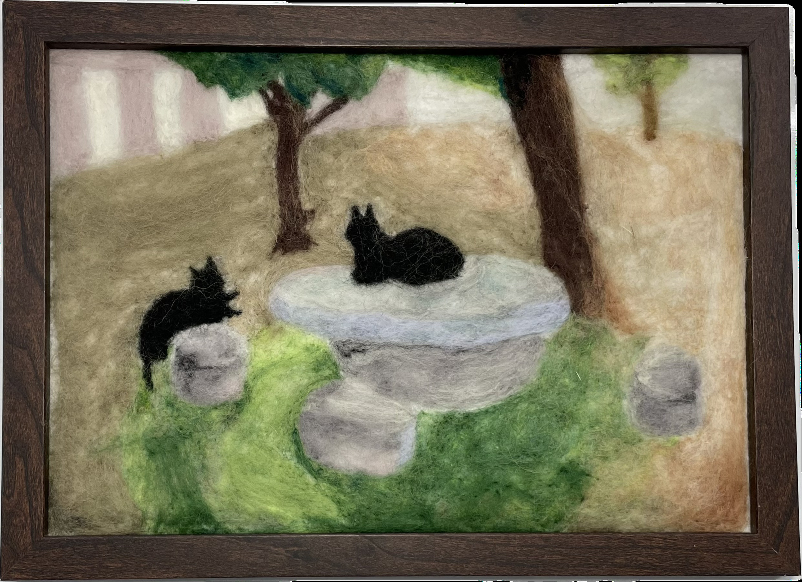

作品名稱：傍晚的兩隻貓
作者姓名：張芷綸
作品主題：之前常出現在傍晚石桌附近的兩隻黑貓
作品敘述：前一段時間，傍晚五、六點放學時我會在校園閒逛，可以看到這兩隻黑貓成對的休息在石頭桌椅附近。每當我嘗試靠近他們一點時，他們就會向後移動一點，就好像遙遠的天體一樣只能遠遠的觀看。
One day, I was hanging around on campus, and it was 5 or 6 PM,when the two black cats appeared near the marble table and chairs. Whenever I took a step toward them, they took a step back again, like some distant astronomical objects, only for viewing from far away.